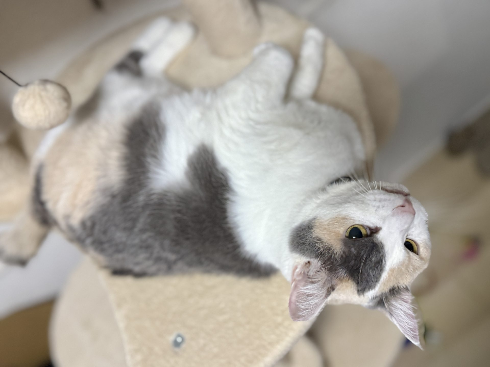
彼奴は桜猫であり林檎猫
彼女とは岐阜県は大垣市の北部で出会った。こちらに引っ越してきて2年が経とうとしていた、春の寒い日のこと。
「どうも、NNNと連絡が取れる者です。」なんて、言いたくなってしまうことが起きた。
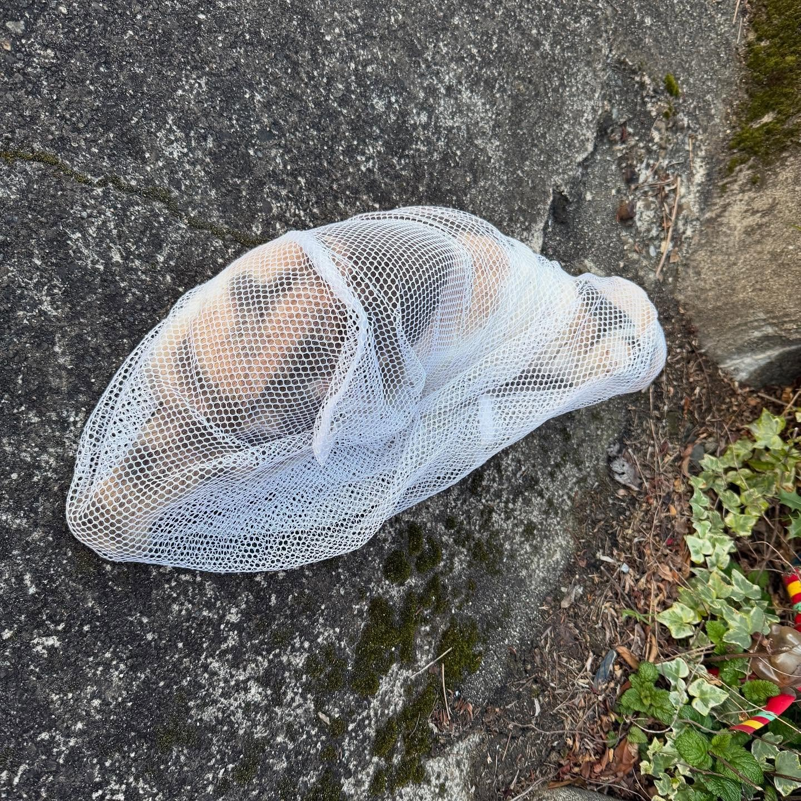
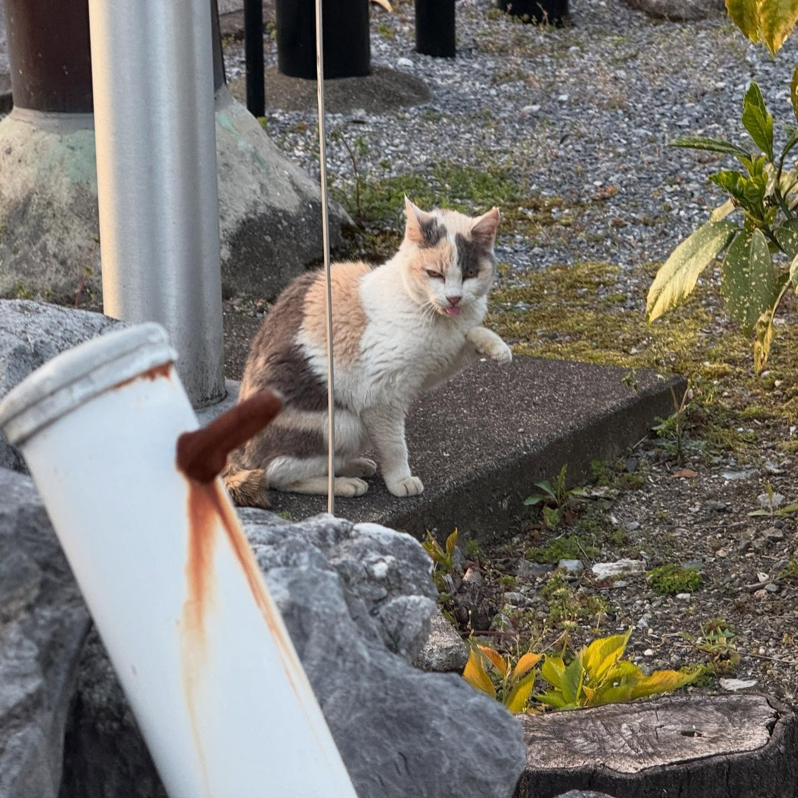
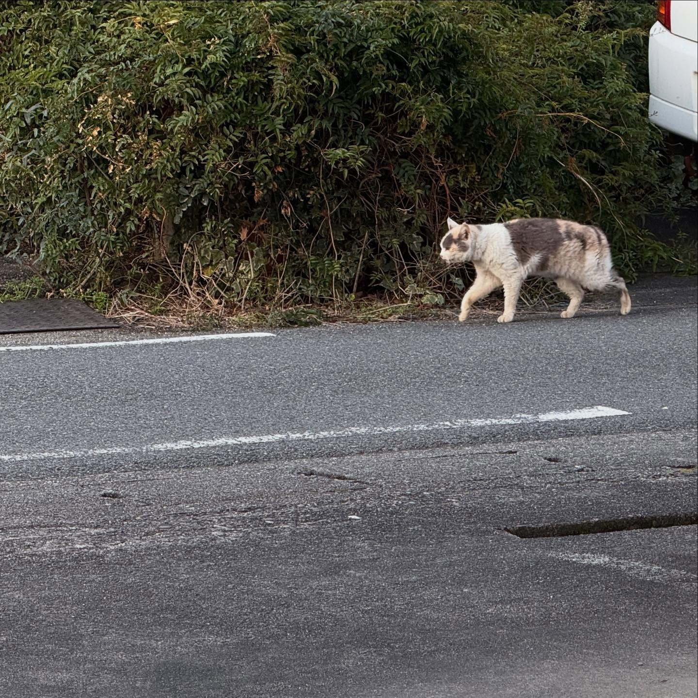
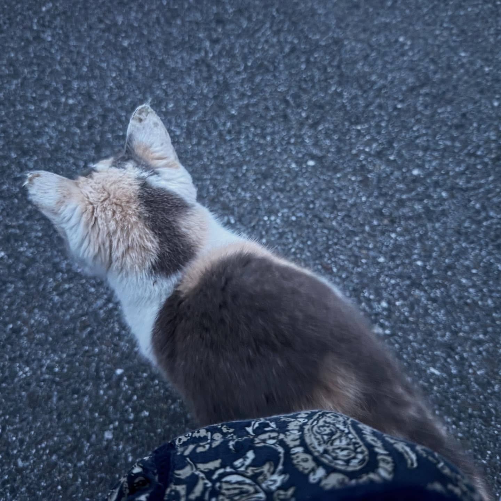
2025年4月1日
そう、みんながあほみたいに嘘つきまくる日。わたしは散歩していた。もちろんいつものようにイヤフォンをして。
ふと右手を見ると、小さな猫がいる。「ｱｰ」聞こえる。立ち止まるとこちらにやってきて、頭突き。あまえんぼうが、母たる存在にやる、あれだ。
おばちゃんなんも持ってないんや、ごめんなあ。と言いながらも、離れようとしないガリガリの猫を見つめて脳裏に浮かぶのは「保護するのか」。
寒波が来ているらしい、4月なのにくそ寒い、手が悴むこの日に、わたしはこのこをどうしたらいいのか。家にならごはんはある。何より汚れまくっているこの体を拭いてやりたい。野良を素手で触ることがいかに無謀な行為かは知っている。しかも自宅に猫がいる状況で。あほすぎる。
思考より身体が動いていた。彼女を抱え、走るわたし。日が暮れてゆく。
あと少しで我が家、というところで、車の往来が激しく唸る猫。怖いなごめんなと言っていると、肩に飛び乗り逃げてゆく。
ああ、なんてことをしてしまったんだろう。縄張りから連れ出し、恐怖を味わわせてしまったのにも関わらず、何も与えることが出来なかった。あほあほあほすぎて涙が出る。血だらけになった手を、我が家の青年は嗅ぎ、洗っといでと。慰めてくれた。辺りはもう真っ暗で、何周か探したけど見つけられなかった。
嘘みたいな幻。幻影を追う。夢だったのか。いいえ、この手は傷だらけになり、上着には毛がついていた。全てを受け入れる覚悟がまだ出来ていなかったのかもしれない。
2025年4月2日
お昼くらいと夕方、散歩しつつ探しまわる。見つけられず。ただ、彼女の声で「ｱｰ」と聞こえた。幻聴かもしれなかった。
「帰巣本能」猫にもあるらしいのは知っていた。けれども、野良に巣といえる場所があるのかはわからない。雨よ、降るな。祈ることしか出来なかった。
そんな日に、久しぶりにご近所の野良猫（外飼いの家猫説あり）チャトラパイセンに出くわす。わたしは彼らに話しかける。「あのこを見つけてください」NNNの利用申請だ。パイセンクラスになると、絶対に幹部でしょう。なんて笑っていられないくらい、わたしは真剣だった。
ただ、翌日遠出をする予定があったのもあり、どこかほっとしているところもあった。頼む、パイセン、縄張りにあのこがいても怒らないでね。わかったよ。と言われた気がした。
2025年4月3日
午後から名古屋にいた。野良だもの仕方あるまいと思うことで、今を楽しめたのです。うちのおりこうさんはもうお留守番だって余裕。ありがとう。
2025年4月4日
2日前の教訓もあり（改めて野良の活動時間を調べ倒していた）、夕方17:00以降一発勝負で歩くことにした。出会ったのはここやったかも、勘違いしてたかもしれんな、とか思いながら、その道に繋がるところを縫うように歩く。
なんとなくだが、逃した場所より出会った場所の近くを重点的にいったほうがいいような気がして。帰巣本能を信じたかったし、パイセンのメイン拠点の近くがなんとなく、なんとなく気になっていたから。
くるりと周り、帰路の向きで歩く。すると、右側にある壁からひょいと跳びおり、こちらに向かって歩いてくる猫がいた。あのこだ。
また今日もわたしに向かって来てくれるの。どゆことよ？とは思いつつも、NNNの確実性に震えた。そして猫の帰巣本能も確かにあるのだと知った。みんなすごいよ。こんな寒い中よう生きとってくれたね。
最近のわたしは、散歩中にちょっとした猫のごはんと洗濯ネットを持ち歩いていた。その気ありまくり、腹は決まっていた。少し食べてもらって、毛繕い、落ち着いたとこでそこらへんの草で遊ぶ。
この時点ではまだ迷っている。こんなに外猫を謳歌する彼女を保護してよいのだろうか。
ふとした瞬間、ごろり、腹を見せてくれる仕草をする。「帰ろ、一緒に。」ネットをふんわりかける。捕まってくれてしまった。
もちろん移動は徒歩なので、ｳｷﾞｬｰとなる。それでも、わたしはしかと抱きかかえ、絶対に大事にする、幸せにするよと話しかけ離さなかった。草で遊んでいるときに、獣医さんには連絡してあった。直行する。
彼女と呼んでいたのは、三毛猫だったから。予想通りおんなのこだった。手術せななあと思って訊いたら、お腹にすでに手術痕がある、と。もしやTNRのこだったのか。耳はただれてわからんけど、飼い猫の可能性は？いろいろ疑問がわく。
獣医師いわく、昔は切ってなかったしこの風貌からして今現在も飼い猫ってことは無い、と。犬歯は折れており、歯石が目立つ。5歳はいってる。お尻には直接見た感じだと何もいない。猫エイズ陽性。軽度の疥癬に罹っている。先住との隔離は必須。とりあえずこんな感じで、夜やし猫もお疲れやしで帰宅。
わたしたちは、一緒に暮らすようになった。
里親探しはもうしていない。彼女がFIVキャリアで気難しいTNRされちまうような猫だからじゃない。そうしたいから。
でもやっぱり、いちばんは先住猫となったりりさんが受け入れてくれたから。彼奴等が、わたしを選んでくれたから。だと思う。
ただただおのれを生きる。
人生でいちばんの幸福を教えてくれた。
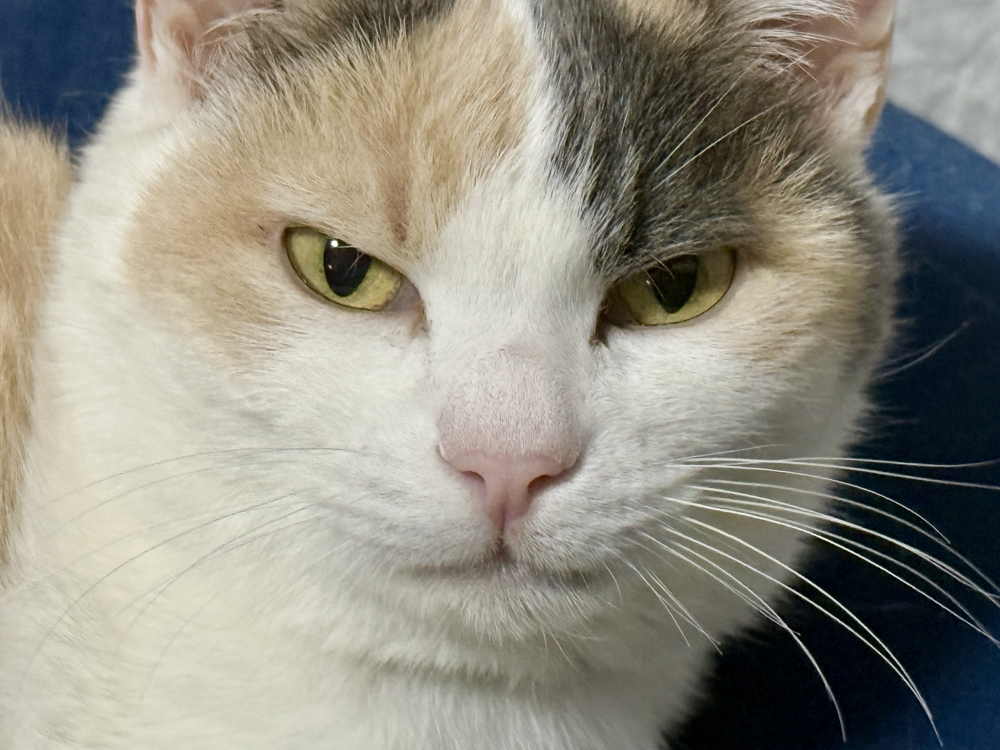
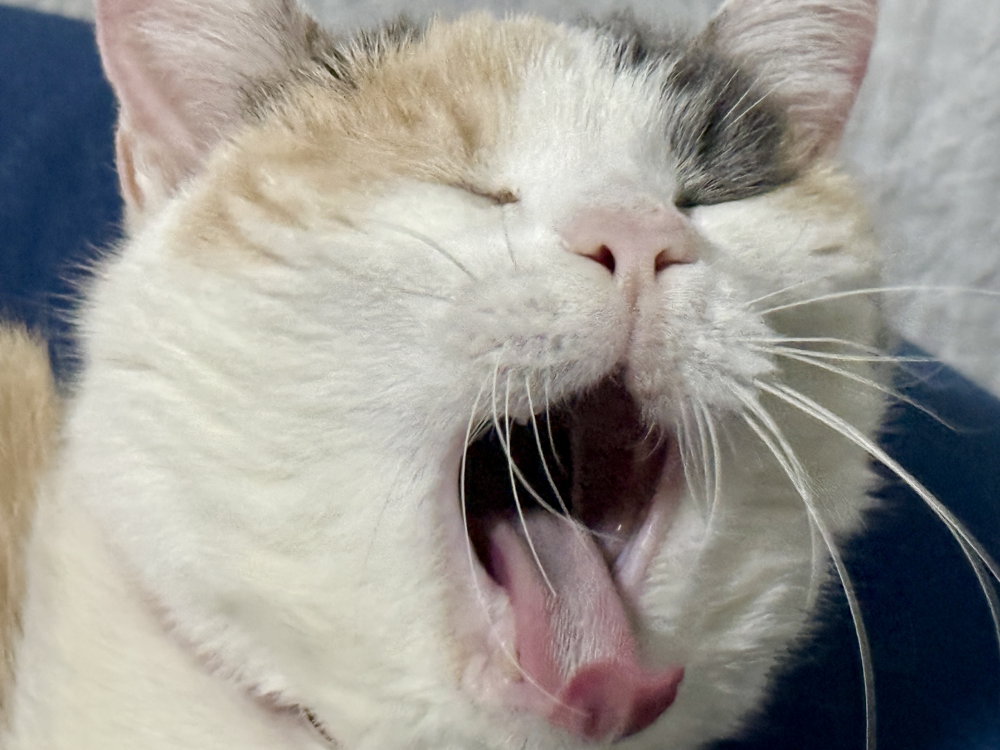
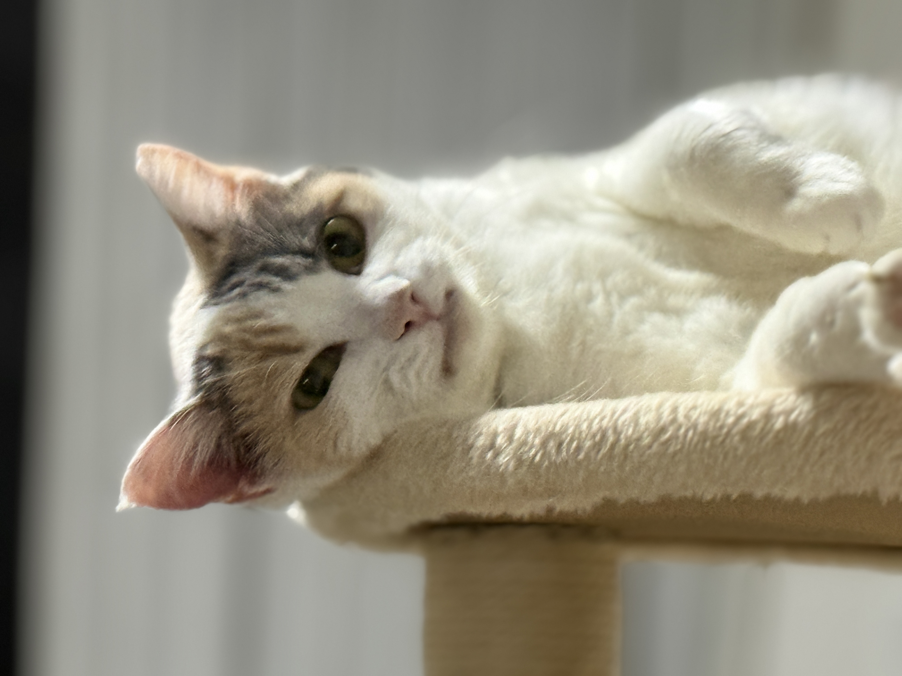
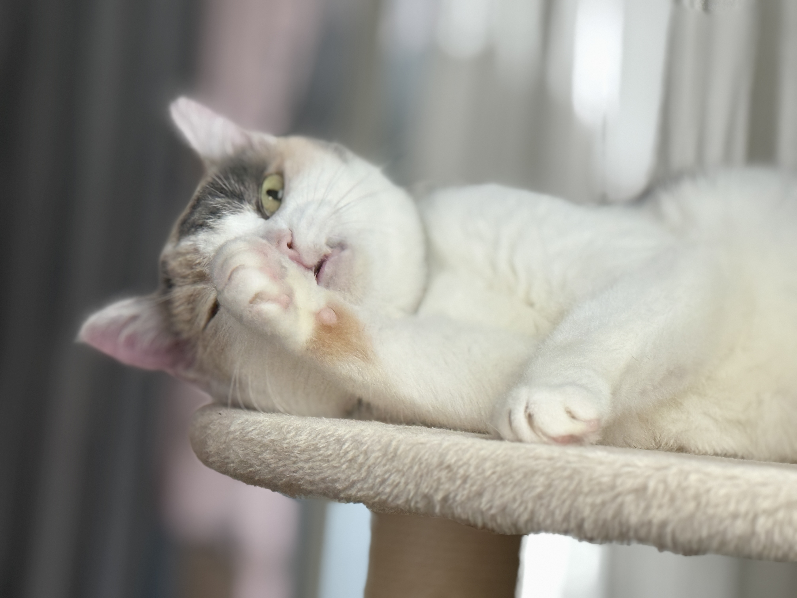
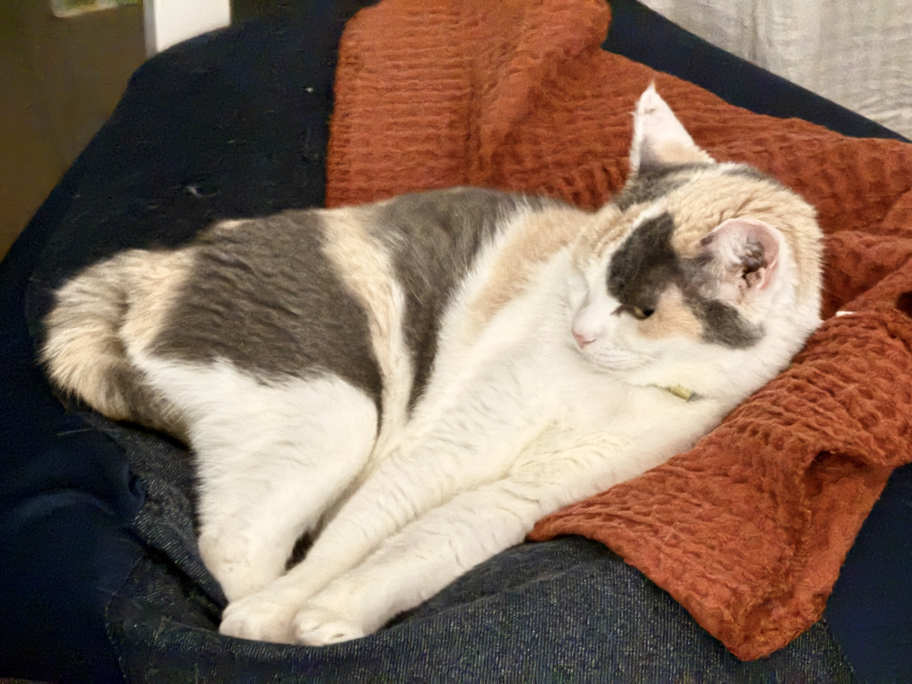
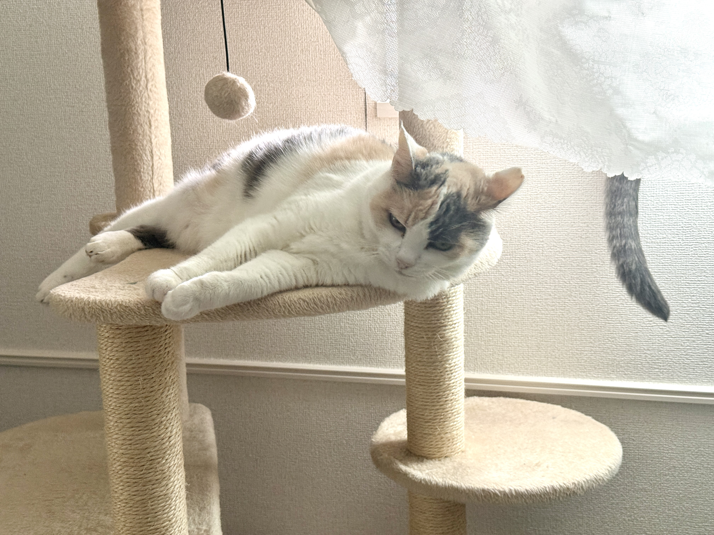